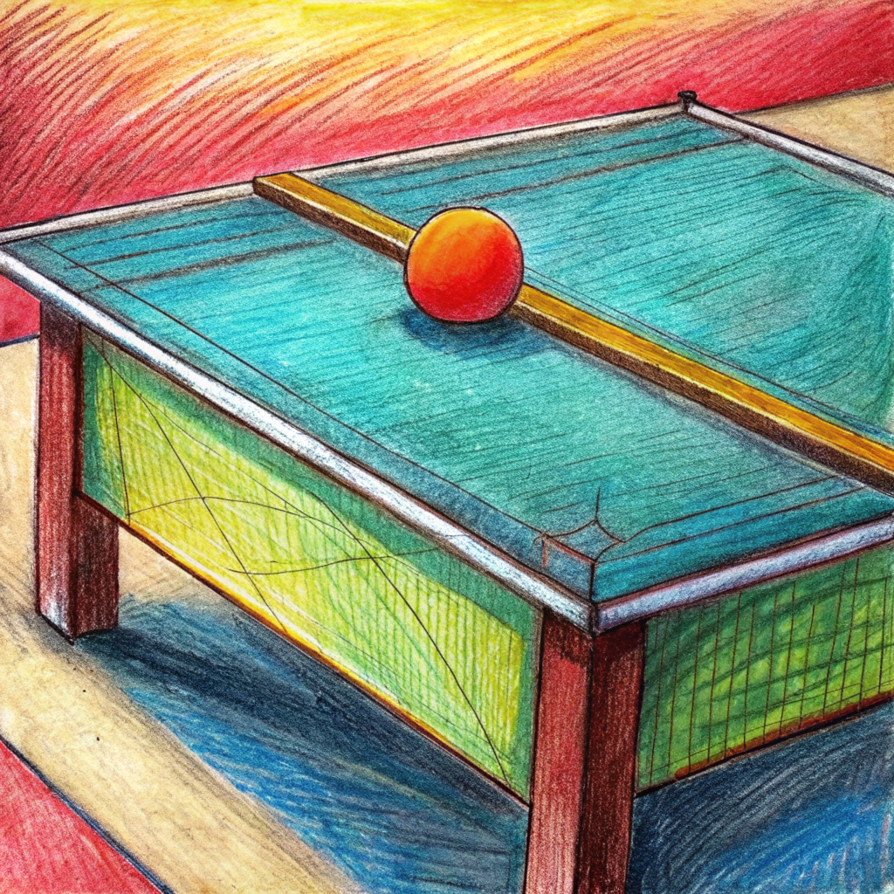
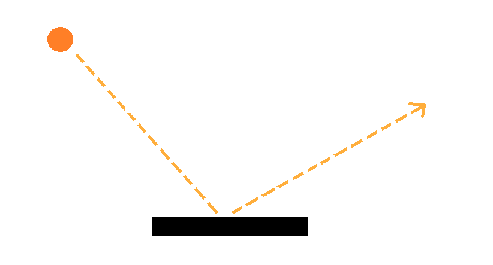
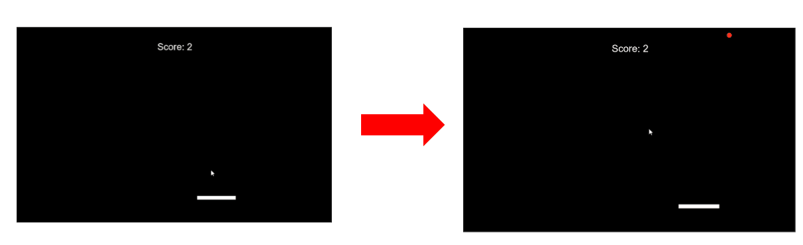

🎾¡Mueve la raqueta y que la pelota rebote! 🎾
El tenis de mesa, también conocido como ping-pong, es un deporte que se juega con una pelota pequeña y
raquetas en una mesa dividida por una red. Los jugadores deben golpear la pelota con la raqueta sobre la
mesa para evitar que su oponente haga lo mismo y que rebote en el lado opuesto. La velocidad y la
precisión son cruciales porque un movimiento mal calculado puede decidir el resultado.
Te convertirás en el maestro de la raqueta en este juego de tenis de mesa en p5.js. Podrás controlar
su movimiento de izquierda a derecha para interceptar la pelota en su camino. Acumulará puntos cada vez
que golpe la pelota con éxito. Sin embargo, tenga cuidado porque cada rebote aumentará la velocidad del
juego, poniendo a prueba sus reflejos y habilidades en todo momento.

En este juego, dibujamos una pelota y una raqueta en la pantalla. La pelota se mueve en diferentes
direcciones y la raqueta se puede mover a izquierda y derecha usando las teclas de flecha (⬅️➡️). Cuando
la pelota toca la raqueta, rebota y el puntaje aumenta en uno.
El código define la posición inicial de la pelota y su velocidad, y la posición inicial de la
raqueta y su longitud. Luego, en cada frame del programa, la función draw dibuja la pelota y la raqueta
y actualiza su posición. Si la pelota toca el suelo, se reinicia su posición y velocidad. Si la pelota
toca la raqueta, cambia la dirección de la velocidad de la pelota y aumenta el puntaje ➕1️⃣.

Explicación
El código define varias variables en la parte superior, incluyendo las variables de la pelota y la raqueta. La variable racketPosition almacena la posición actual de la raqueta, y la variable racketLength almacena su longitud. La variable position almacena la posición actual de la pelota, y la variable velocity almacena su velocidad. La variable r almacena el radio de la pelota, y la variable speed almacena su velocidad. La variable score almacena el puntaje actual.Variables de la pelota
- position: Almacena la posición actual de la pelota en el espacio de juego, utilizando dos coordenadas (x, y) para definir su ubicación horizontal y vertical.
- velocity: Representa la velocidad actual de la pelota, también en dos dimensiones (vx, vy), indicando su desplazamiento en cada dirección por unidad de tiempo.
- r:Define el radio de la pelota, determinando su tamaño físico en el juego.
- speed: Es un valor alternativo o complementario a la velocidad, que puede representar la magnitud total de la velocidad de la pelota o su rapidez en una sola dimensión.
Variables de la raqueta
- racketPosition: Almacena la posición actual de la raqueta en el espacio de juego, generalmente utilizando una sola coordenada (x) para indicar su posición horizontal.
- racketLength: Define la longitud de la raqueta, determinando el tamaño del área con la que puede interceptar la pelota.
Variables de la puntuación
- score: Almacena el puntaje actual del juego, que puede aumentar o disminuir dependiendo de las acciones del jugador y el desarrollo del mismo.
La función setup se ejecuta una sola vez al iniciar el programa. En esta función, se crea un lienzo de dibujo de tamaño 810x500 píxeles usando la función createCanvas. Luego, se inicializa la posición de la pelota y la raqueta, y se calcula una velocidad aleatoria inicial para la pelota. Está función en si realiza lo siguiente:
- Establece el tamaño del lienzo del juego.
- Inicializa la posición de la raqueta en el centro inferior del lienzo.
- Inicializa la posición de la bola en la parte superior central del lienzo
- Calcula una velocidad inicial aleatoria para la bola.
La función draw se ejecuta en cada frame del programa. En esta función, se dibujan la pelota y la raqueta en el lienzo usando las funciones ellipse y rect. La posición de la pelota se actualiza en cada frame usando la variable velocity. Está función en si realiza lo siguiente:
- Dibuja la raqueta en la posición especificada.
- Dibuja la bola en la posición especificada.
- Dibuja el puntaje en la pantalla.
- Mueve la bola según su velocidad.
- Mueve la raqueta hacia la izquierda o hacia la derecha según las teclas presionadas por el usuario.
- Reinicia la posición y la velocidad de la bola si esta toca el suelo.
- Hace rebotar la bola en las paredes del tablero.
- Hace rebotar la bola en la raqueta y aumenta el puntaje si la bola colisiona con la raqueta.
La función keyIsDown se utiliza para detectar si se está presionando una tecla de flecha. Si se está presionando la tecla de flecha izquierda, la raqueta se mueve a la izquierda, y si se está presionando la tecla de flecha derecha, la raqueta se mueve a la derecha.
La función p5.Vector.random2D se utiliza para generar un vector aleatorio en dos dimensiones, que se utiliza como velocidad inicial de la pelota.
La función velocity.mult se utiliza para multiplicar el vector de velocidad por un factor de escala, lo que aumenta o disminuye la velocidad.
Si quieres llevar este juego al siguiente nivel 🚀, ¡puedes intentar hacer que la pelota rebote en la pared izquierda! Esto agregará un nuevo desafío al juego y hará que la pelota rebote en todas las paredes del lienzo.

Aquí te dejamos algunos pasos para lograrlo:
- Agrega una condición if adicional en la sección "// Rebotar la bola en las paredes del tablero para detectar cuando la pelota toca el borde izquierdo del lienzo".
- Si la pelota toca el borde izquierdo, ajusta su posición horizontal al borde izquierdo y revertir su velocidad horizontal.
- ¡Listo! Ahora la pelota debe rebotar en las paredes izquierda, derecha, arriba y abajo.
¡Buena suerte y que disfrutes programando tu juego 😀😀
Recuerda: siempre puedes restaurar el programa original oprimiendo el botón Restaurar.
Si deseas ver la solición seleciona el boton "Solucion" y luego "ejecutar" del mismo modo con puedes volver al codigo origal con "restaurar" y luego "ejecutar"